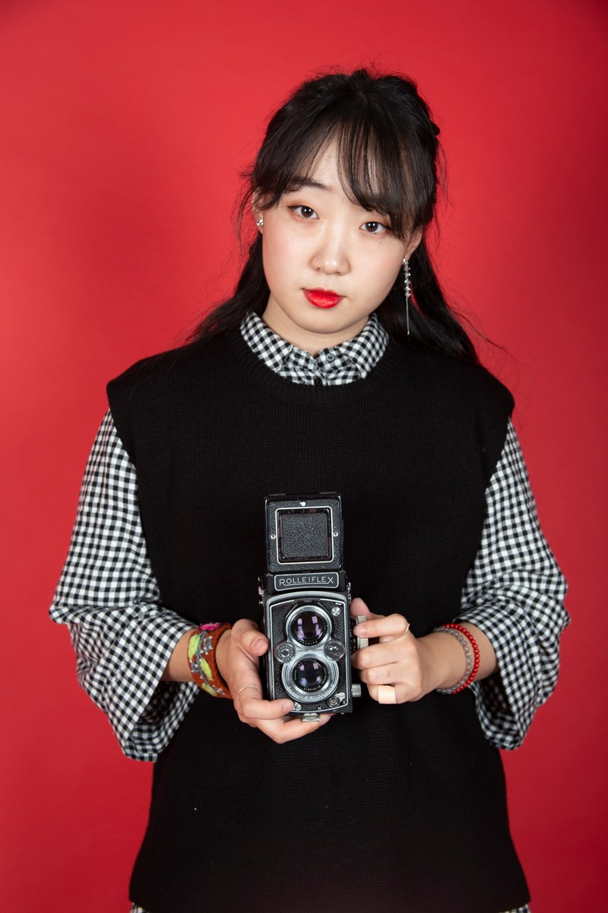

SOOVIN CHOI 최수빈
Mixed Media Artist
I explore various art mediums made from the 19th century to the 21st century, such as Cyanotypes, Van Dyke prints, Photoshop, Premiere Pro, Maya, and Touch Designer. Alternative process photography and digital media arts have two centuries' differences. Thus, I like to call myself a time traveler artist because I jump around the centuries to create artworks.
I have established solid artistic intention from experiencing some photography projects and exhibitions in my work. Since I am an international student living life as an alien, I ask myself a lot about my presence. The self-reflection gives me motivation and inspiration. I feel more close and creative to works and projects related to my life. Therefore, most topics I focus on are identity, cultures, Korea, stereotypes, and discrimination.
Every day and every moment in the United States for the past five years has inspired, provoked my curiosity and passion, and helped me seek my voice as an artist. Creating art is a special shelter where I can breathe during this journey. In the future, I want to be an art professor who provides a safe shelter to students where they can freely express themselves and find their abilities.